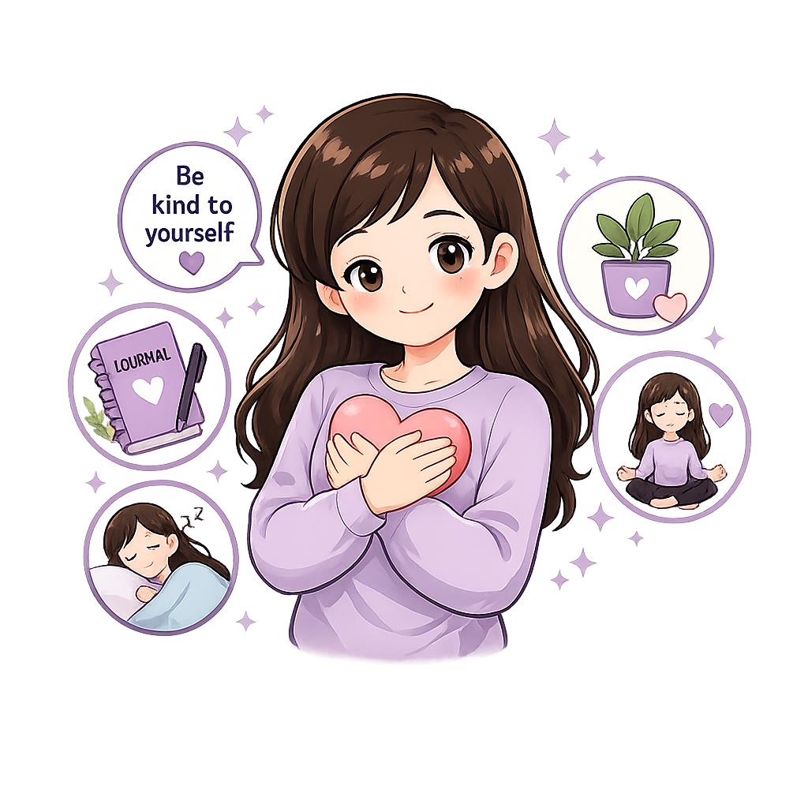

Kesehatan mental adalah kondisi ketika seseorang mampu mengenali emosinya, mengatasi tekanan hidup, belajar dengan baik, menjalin hubungan yang sehat, dan berkontribusi dalam kehidupan sehari-hari. Menjaga kesehatan mental sama pentingnya dengan menjaga kesehatan fisik.

Kenali emosi, kelola stres, dan bangun kebiasaan yang mendukung kesehatan mental.
Kesehatan mental adalah kondisi ketika seseorang mampu mengenali potensi dirinya, mengelola emosi, mengatasi tekanan hidup, belajar dan bekerja secara produktif, serta menjalin hubungan yang baik dengan orang lain ( WHO – Mental Health 2026).
Menjaga kesehatan mental dapat dilakukan melalui kebiasaan sederhana yang dilakukan secara konsisten setiap hari.
Segera cari bantuan jika:
Kenali kebiasaan yang mendukung dan yang dapat mengganggu kesehatan mental.
Orang yang memiliki masalah kesehatan mental berarti lemah.
Stres pasti merupakan tanda gangguan mental.
Masalah kesehatan mental dapat hilang dengan sendirinya tanpa perlu dibicarakan.
Masalah kesehatan mental dapat dialami siapa saja dan bukan merupakan tanda kelemahan.
Stres merupakan respons normal terhadap tekanan, tetapi perlu dikelola dengan baik agar tidak berkepanjangan.
Berbicara dengan orang yang dipercaya atau tenaga profesional dapat membantu memperoleh dukungan dan penanganan yang tepat.
Pelajari pentingnya menjaga kesehatan mental sejak usia remaja.
Unduh infografis Kesehatan Mental sebagai media belajar mandiri.
Download InfografisTidak apa-apa jika sesekali merasa sedih, cemas, atau lelah. Yang terpenting adalah tidak menghadapi semuanya sendirian. Berbicara dengan orang yang dipercaya dan menjaga kebiasaan hidup sehat merupakan langkah awal untuk menjaga kesehatan mental.